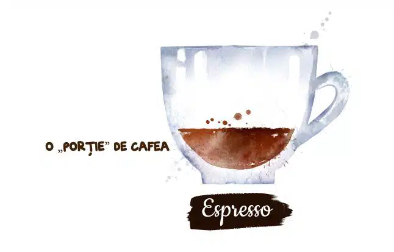
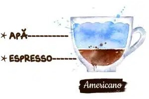
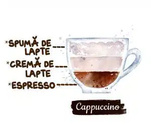
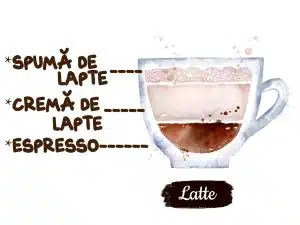
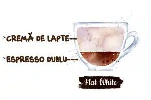
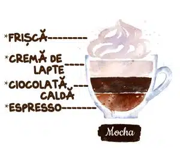
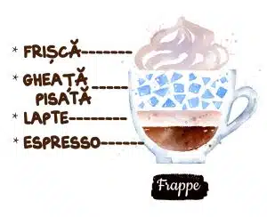

Am fost cu toții acolo, la un moment dat... Stând la coadă la o cafenea to go, confuzi în privința diferenței dintre un latte și un cappuccino, comandând până la urmă un flat white sau cine știe ce altceva. Și până la urmă, care-i diferența între ele? Mai ales că mai toate băuturile din cafea cuprind trei ingrediente comune: espresso, cremă de lapte și spumă de lapte.
 Datorită gustului său puternic și bogat, espresso-ul este considerat una dintre cele mai populare băuturi. Din italiană, cuvântul „espresso” este tradus „sub presiune”. Se prepară o băutură de înaltă presiune, obținându-se un extract de cafea, care se toarnă în căni. Proporțiile de preparare sunt aproximativ următoarele: 10-20 g boabe de cafea măcinate și 30-50 ml apă. Espresso este comandat de obicei dimineața pentru a se înveseli cu o băutură puternică și aromată.
 Foarte ușor de confundat cu cafeaua simplă, cafeaua neagră la ibric sau la filtru. Este preferat de cunoscătorii într-ale cafelei care vor să simtă calitățile boabelor de cafea, fără artifciile aduse de lapte. Apa fierbinte adăugată peste un espresso diluează aciditatea ei, menținând totuși un nivel ridicat de cofeină. În funcție de cafenea și preferințele consumatorului, proporția folosită poate varia între o parte espresso și 3 părți apă, până la părți egale.
 Cappuccino este o băutură de cafea tradiţională italiană, preparat cu espresso, lapte cald şi spumă de lapte. Numele provine de la culoarea robei purtate de călugării şi călugăriţele din ordinul Capucinilor. Unul dintre cele mai populare tipuri de cafea, cappuccino este o băutură clasică italiană făcută din părți egale de espresso, lapte spumat și spumă de lapte. Straturile oferă o textură plăcută, iar spuma de deasupra adaugă un plus de rafinament.
 Dintre toate tipurile de cafele, latte-urile sunt considerate băuturi „introductive”. Asta pentru că aciditatea și amăreala cafelei sunt reduse și bine ascunse de cantitatea generoasă de lapte. Un singur shot de espresso servește ca bază a două sau trei părți de cremă de lapte și un strat final, subțire, de lapte spumat deasupra. Este una dintre cele mai asociate băuturi din cafea cu siropurile aromatizante sau cu gusturile dulci. Drept urmare, chiar dacă nu ești cel mai mare împătimit al laptelui, poți foarte ușor să-l înlocuiești cu o alternativă vegetală.
 Originar din Australia și Noua Zeelandă, flat white este similar cu latte-ul, dar are un gust mai intens de cafea. Este făcut cu espresso și lapte aburit, având o spumă de microfoame fină, care îl diferențiază de alte băuturi pe bază de lapte. Flat white este ideal pentru cei care iubesc o textură cremoasă, dar doresc ca aroma puternică de espresso să fie accentuată.
 În esență, „mocha” înseamnă acel tip de cafea arabica, ce a fost cultivată inițial doar Mocha, Yemen, care se distinge prin aroma puternică de ciocolată cu lapte. Astăzi însă, Mocha este considerat un hibrid între cafea și ciocolată caldă, delicios și decadent deopotrivă. Deși un mocha este adesea interpretat diferit în întreaga lume, baza este un shot de espresso, combinat cu o pudră sau un sirop de ciocolată, urmat de cremă de lapte și un strat generos de frișcă deasupra. Este foarte aproape de un latte cu ciocolată, în sensul că proporția folosită este adesea 1/3 espresso și 2/3 cremă de lapte. Iar stratul mic de spumă al latte-ului este înlocuit de cel generos de frișcă.
 Frappe-ul își are originile în Thessaloniki, Grecia, și este o băutură din cafea care are ca ingredient principal un shot de espresso, uneori înlocuit cu un shot de cafea instant, sau ness. Acesta este amestecat alături de lapte, frișcă și diferite alte arome sau toppinguri și servit într-un pahar înalt. "Frappe," în limba franceză, înseamnă "rece" atunci când se referă la o băutură. De fapt, a existat o băutură americană numit cafe frappe, un fel de granit cafea. Cu toate acestea, în numele caffe frappe, "frappe" înseamnă "agitat".